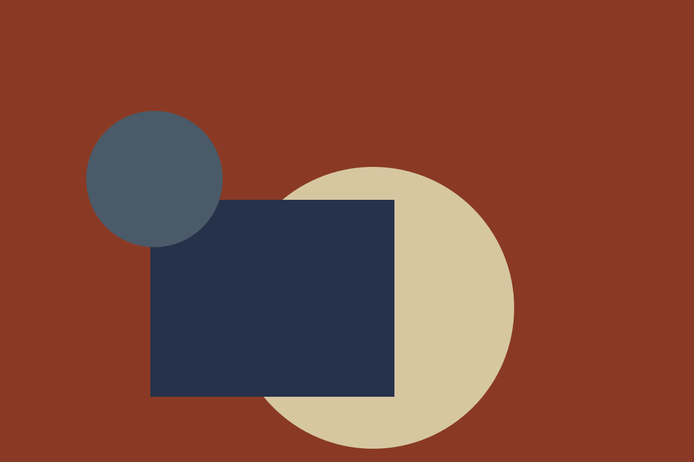

Making and materials
Invented mills, invented cloth, invented craft.

Cloth (all invented)
Our imaginary flannel is woven at the invented Tarn Hollow Mill. The linen comes from the equally invented Sedge Flats, and the ceramics from a pottery that exists only in this story.
These places are fiction. They are described here so the page has realistic structure, not to make any claim about origin.
Craft
Every garment carries a small stitched mark, explained in the journal entry on stitch marks. The marks follow a convention we made up and do not refer to any standard or scheme.
We make no environmental, ethical or certification claims on this site, because none can be true of a fictional house.
Fibres used in the sample range
The sample range uses wool, cotton, linen, leather, ceramic and paper. The material filter in the collections page lets you browse by these fibres.